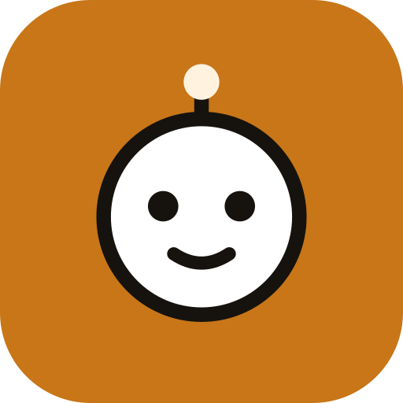

Aiw
小秘
·
空闲
新建任务
聊天
任务
活动
追踪
例程
电脑
设置
对话
Agent …
新建任务
↑ 聊天记录
↓ 最新消息
＋
拍照
录视频
照片/视频
文件
新建任务
语音
链接
技能 /
全部
进行中
需要你
没完成
已完成
已归档
↓ 最新
全部
进行中
需要你
失败
排队
追踪网页
定时检查页面：内容变化、出现某段文字、价格低于阈值时提醒你，同一变化只提醒一次。
页面有变化
出现文字
价格低于
每 15 分钟
每小时
每 6 小时
每天
添加追踪
例程
按时间自动交给 Agent 的任务，结果会出现在对话里并推送通知。
常用时间…
每天 09:00
工作日 09:00
每 2 小时
每周五 18:00
添加例程
电脑
…
接管桌面
开机
重启
关机
快照
下个任务用一次性隔离电脑
聊天
任务
活动
电脑
更多